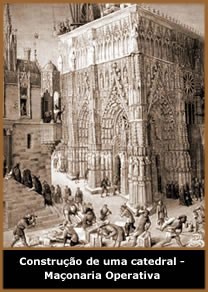
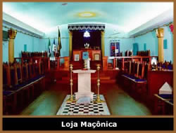
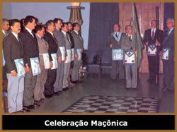

Origem
Especula-se
que a Maçonaria teria nascido do trabalho dos construtores
de catedrais medievais, que organizavam-se criando sua própria
sociedade, a então Maçonaria Operativa. Estes pedreiros
deslocavam-se continuamente de canteiros em canteiros (lodges),
livres da autoridade das corporações, da nobreza
e da Igreja, e sem compromisso de pagarem impostos. Por isto,
o nome de Pedreiros Livres (freemasons ou franc-maçon),
cuja importância se desenvolveu do século XII ao
XIV.
Com o Renascimento, o Protestantismo opõe-se
à Igreja Católica, abalando Roma e provocando uma
ruptura dentro do Mundo Cristão. Galileu, baseando suas
idéias na ciência e na matemática, abriu aos
pesquisadores de sua época um novo mundo e provou que o
Universo era infinito. A Ciência progrediu rapidamente e
uma divisão foi estabelecida entre o dogma da religião
e o mundo de razão.
No fim do século XVII, surgiu a idéia
de um deísmo que, pouco a pouco, conduziu à noção
de um Criador, como "Grande Arquiteto", criando um mundo
de acordo com regras imutáveis.
Maçonaria
Especulativa (Maçonaria Moderna)
Possivelmente, a Moderna Maçonaria tenha
se originado na Escócia para onde foram, segundo algumas
lendas, diversos membros templários,
fugindo da Inquisição
da Igreja Católica. Eles teriam se associado à Guildas
Maçônicas passando a estas, vários de seus
conhecimentos filosóficos e esotéricos. O próprio
Robert de Bruce, o rei que libertou a Escócia da dominação
inglesa, pertencia à sociedade maçônica.
Como se vê, a transição da
Maçonaria Operativa para a Maçonaria Especulativa
(forma como esta organização apresenta-se hoje)
dá-se de forma imperceptível. As Lojas de Maçons
Operativos foram progressivamente recebendo membros que não
pertenciam ao ofício da construção (membros
da nobreza, burguesia e clero), que eram chamados de "Maçons
Aceitos", e que podiam participar de suas discussões
após serem iniciados.
No início do século XVIII aparece
a franco-maçonaria moderna, com orientação
interna baseada no Livro das Constituições publicado
em 1723 por James Anderson, que exerceu influência internacional
no pensamento das sociedades modernas, difundindo-se principalmente,
nos países anglo-saxônicos.
A evolução da Maçonaria Especulativa
é marcada, então, por uma secularização
característica contendo, de acordo com a ideologia das
Constituições de Anderson, um fundamento no qual
todos os homens parecem concordar: o deísmo, que é
uma forma de religião natural, livre de todo dogma e que
busca a felicidade em qualquer lugar. Outro fato importante que
influencia a maçonaria no século XVIII, é
a tendência à universalidade que se manifesta por
uma abertura muito próxima aos pensamentos dos Iluministas,
caracterizados pelo respeito à tolerância e à
fraternidade. A Revolução consagrou este estado
de espírito, manifestado por muitos maçons, com
a defesa dos Direitos Humanos e do Cidadão, a luta incansável
contra toda forma de escravidão, e a rejeição
de todo o dogmatismo.
A maçonaria teve influência decisiva
em grandes acontecimentos mundiais, tais como a Revolução
Francesa e a Independência dos Estados Unidos.
Maçonaria
- Características Gerais
A Maçonaria trata-se de uma associação
semi-secreta, difundida no mundo todo, que adota os princípios
de fraternidade e da filantropia entre seus membros. Ela é
considerada semi-secreta devido ao conhecimento mundial de sua
existência, embora muitos aspectos permaneçam ocultos
aos não membros de sua sociedade. No cotidiano os maçons
se comunicam através de sinais secretos, senhas e cumprimentos
especiais.
Ela é composta de homens que se iniciam
através de rituais, incluindo juramentos de fidelidade
e uma série de simbolismos, onde a moral, a fraternidade
e a retidão são representadas pelo livro sagrado,
pelo compasso e pelo quadrado.
Os
Maçons são divididos e organizados em Lojas. Existem
as Grandes Lojas (normalmente distribuídas por Estados)
que são responsáveis pela jurisdição
das menores Lojas (também chamadas de Lojas Simbólicas,
distribuídas por cidades, ou em alguns casos, bairros ou
comunidades). Em suma, Loja Maçônica, é o
lugar ou a reunião em que se congregam os Maçons
para um trabalho específico.
Para ser um maçom, o indivíduo não
precisa ser de uma específica religião, raça
ou segmento social. Ele precisa apenas acreditar em um ser único
e supremo, do qual os Maçons chamam de "Grande Arquiteto
do Universo", ou simplesmente Deus. Além disso, é
preciso ser de boa índole e caráter, adorador da
ordem e da justiça, em outras palavras, ser um cidadão
exemplar. Um Maçom indicará o possível integrante,
para seu Mestre. Esse novo integrante será investigado
minuciosamente para que não haja dúvida de que é
um homem íntegro. O Mestre irá analisar o pedido
de ingresso, juntamente com os outros Maçons da Loja, que
farão uma votação para decidirem se o novo
integrante será aceito na Ordem. Após ter ingressado
na sociedade, qualquer deslize moral ou das regras impostas que
o integrante venha a cometer, será extinguido e o Maçom
que o indicou poderá ser punido. Todo Maçom deve
seguir a doutrina histórica, também chamada de Landmarks
(Veja o Texto Complementar Landmarks).
Antes de 1893 a filiação maçônica
só era facultada aos adultos do sexo masculino. Naquele
ano uma Loja da França procedeu à admissão
de uma mulher em seus quadros, episódio que deu origem
a Lojas Maçônicas mistas, que se reuniram e formaram
a ordem mista internacional "O Direito Humano". Posteriormente
outras Lojas mistas foram surgindo e hoje existe até mesmo
Potência Maçônica Feminina. Mas atualmente,
ainda há restrição para o sexo feminino ingressar
na Maçonaria. Para saber mais, veja a matéria Grão-mestres
de saia da revista Isto É.
O aprendizado maçom está dividido
por etapas. Cada etapa é desenvolvida numa Câmara
própria, com seus respectivos graus. A Maçonaria
universal compreende basicamente os graus de Aprendiz, Companheiro
e Mestre que são das Lojas Simbólicas (1º ao
3º grau). Além dela existem: Lojas de Perfeição
(do 4º ao 14º grau), Capítulos (do 15º ao
18º grau), Conselhos de Kadosch (do 19º ao 30º
grau), Consistórios (31º e 32º graus) e Supremo
Conselho (33º grau). Para maiores detalhes de cada uma, veja
o Texto Complementar Hierarquia
Maçônica.
Os
ensinamentos maçônicos são ministrados através
de rituais que, contém princípios de todas as "Artes
Iniciáticas", como o hermetismo, a cabala, o simbolismo,
além dos conceitos tradicionais sobre as cores, os números
e as lendas antigas. Nos ritos maçônicos fundem-se
o simbolismo das Iniciações primitivas, os ensinamentos
Rosa-Cruzes dos antigos filósofos, do pitagorismo, dos
templários, do judaísmo, do cristianismo, etc.,
daí a sua riqueza fora do comum, se comparada a outras
instituições fraternas.
Há séculos, a Maçonaria sofre
um certo preconceito, principalmente de algumas religiões.
Isso se deve à idéia de associação
misteriosa e secreta que a Maçonaria passa para os leigos.
Desse modo, já foi associada à seitas satânicas,
práticas macabras e até mesmo à grandes conspirações.
Segundos os próprios maçons, o objetivo
da Maçonaria é fazer com que seus adeptos, sejam
homens que busquem a evolução espiritual e intelectual,
contribuindo com a humanidade, e ajudando seus semelhantes a também
evoluírem em suas vidas. Mas para muitos, a Maçonaria
continua sendo uma incógnita, assim como seus verdadeiros
intuitos; transformando-se deste modo, num alvo de grande curiosidade,
que continuará alimentando a imaginação das
pessoas através dos séculos.
Por
Spectrum